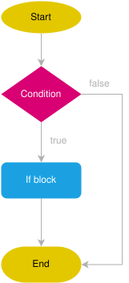
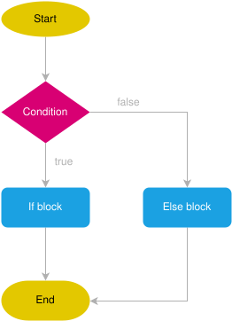
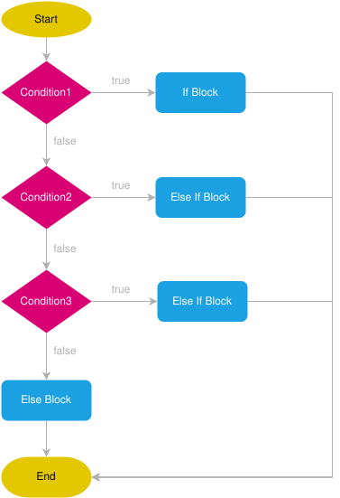

Python
Ao escrever código em python podemos executar esse código de algumas formas. A mais comum é criar um arquivo .py por exemplo hello.py e no terminal executar o comando:
Quando você executa esse comando, você está instruindo o interpretador Python a:
- Carregar o arquivo hello.py
- Interpretar e executar linha por linha o conteúdo desse arquivo
- Exibir no terminal qualquer saída gerada (como chamadas print() ou mensagens de erro)
Declaração de Variáveis
Em Python, as variáveis são utilizadas para armazenar valores e são declaradas atribuindo um valor a um nome específico. Ao contrário de outras linguagens, Python não exige a declaração explícita de tipos de dados, pois opera sob o princípio da tipagem dinâmica (o tipo de dado é inferido pelo intepretador na medida que o código é analisado).
No exemplo abaixo estamos declarando algumas variáveis. Em Python, não é necessário especificar o tipo da variável, ele é dinâmicamente tipado.
nome = "Alice" # Texto, string
afirmacao = True # Booleano, bool
idade = 25 # Inteiro, int
altura = 1.70 # Ponto flutuante, float
PI = 3.14159 # Constante
GRAVIDADE = 9.8 # Constante
Comentários em Python
Comentários são trechos de texto dentro do código-fonte que são ignorados pelo interpretador Python durante a execução do programa. Eles são utilizados para explicar o código, fazer anotações, fornecer documentação ou desativar temporariamente partes do código. Seu uso é altamente recomendável, pois auxilia na documentação do código.
Temos a disposição diferentes duas maneiras distintas de comentar código: comentário de linha e comentário de bloco. Comentários de linha começam com o símbolo # e continuam até o final da linha. São úteis para adicionar breves explicações ou notas em uma única linha de código.
Quando pensamos em comentários devemos levar em consideração alguns critérios importantes para torná-los realmente úteis no processo de desenvolvimento. Os principais deles são:
- Escrever comentários suficientemente descritivos que irão apoiar o entendimento do algoritmo
- Não comentar situações óbvias
- Padronizar a escrita de comentários no código-fonte.
Tipos de Dados e Conversões
No Python, os tipos de dados definem a natureza dos valores armazenados em variáveis.
| Tipo | Descrição | Exemplo |
|---|---|---|
| int | Números inteiros, positivos ou negativos, sem casas decimais. | x = 10, y = -5 |
| float | Números reais, com casas decimais. Também pode representar notação científica. | pi = 3.14, e = 2.7e3 |
| str | Cadeia de caracteres (texto). Deve ser delimitada por aspas simples ou duplas. | nome = "Python", s = 'Oi' |
| bool | Valores booleanos que representam verdadeiro (True) ou falso (False). | ativo = True, erro = False |
| list | Coleção ordenada e mutável de itens, que pode conter diferentes tipos de dados. Definida entre colchetes. | nums = [1, 2, 3] |
| tuple | Coleção ordenada e imutável de itens. Definida entre parênteses. | cores = ("azul", "vermelho") |
| set | Coleção desordenada de itens únicos. Definida entre chaves. | vogais = |
| dict | Estrutura que armazena pares chave-valor. Definida entre chaves com dois pontos separando chave e valor. | aluno = |
| None | NoneType, Representa a ausência de valor | vazio = None |
Entradas e saídas
Para receber entrada do usuário, Python oferece a função input(). O valor retornado após executar a função foi o que o usuário digitou no terminal. Aqui estamos falando de entrada em terminal, ou seja, sem uso de interface gráfica.
No trecho de código que segue, a mensagem Digite seu nome: é impressa na tela e o cursor fica aguardando a entrada do usuário. Após o usuário digitar os dados e pressionar ENTER, o valor é armazenado na variável nome.
Já para exibir informações para o usuário, podemos usar a função print(), conforme o exemplo a seguir. No código em questão, será impresso na tela a mensagem Olá, acompanhada do valor da variável nome.
Não necessáriamente precisamos enviar uma mensagem com o input.
Conversões
Importante
O input() SEMPRE retorna uma string, conversões podem ser necessárias. O Python permite a conversão de tipos com funções como:
int("10") # Converte string para inteiro → 10
float(5) # Converte inteiro para float → 5.0
str(3.14) # Converte número para string → "3.14"
Outras funções para conversão de tipos são mostradas na tabela abaixo:
Funções de conversão
| Função | Descrição |
|---|---|
int(x) |
Converte para inteiro |
float(x) |
Converte para ponto flutuante |
str(x) |
Converte para string |
bool(x) |
Converte para booleano |
list(x) |
Converte para lista |
tuple(x) |
Converte para tupla |
set(x) |
Converte para conjunto |
dict(x) |
Converte para dicionário (se a estrutura for compatível) |
Essas funções recebem um valor e convertem para o tipo desejado. Podemos converter por exemplo o valor de um input:
O código acima vai:
- mostrar a mensagem
"Digite sua idade: "para o usuário - o valor enviado pelo usuário é uma
string - a função
intvai tentar converter o valor do input para um inteiro
Nesse exemplo se o valor enviado pelo usuário for um inteiro válido a variável idade vai receber esse valor.
Strings
As strings são usadas para representar texto e são imutáveis, o que significa que uma vez que uma string é criada, ela não pode ser alterada. O Python fornece uma grande variedade de métodos embutidos para manipular e operar em strings de maneira eficiente.
Com uma string podemos fazer algumas operações...
| Operação | Exemplo | Resultado |
|---|---|---|
| Concatenação | "Olá, " + "mundo" |
"Olá, mundo" |
| Repetição | "ha" * 3 |
"hahaha" |
| Indexação | "Python"[0] |
'P' |
| Fatiamento | "Python"[1:4] |
'yth' |
| Comprimento | len("Python") |
6 |
| Verificação | "Py" in "Python" |
True |
Ou usar algumas funções como len() que retorna o comprimento da string, ou seja, o número de caracteres presentes nela.
Podemos usar a upper() para converter todos os caracteres da string para maiúsculo, enquanto lower() os converte para minúsculo.
As funções strip(), lstrip() e rstrip() removem espaços em branco e caracteres especiais do início e/ou final da string.
A função split() divide a string em uma lista de substrings com base em um separador, enquanto join() junta uma lista de strings em uma única string.
string = "Python é lindo"
string = "Python.lindo"
lista = string.split()
lista2 = string.split(".")
print(lista)
print(lista2)
string_nova = "-".join(lista)
print(string_nova)
A função replace() substitui todas as ocorrências de uma substring por outra.
string = "Python é incrível!"
nova_string = string.replace("incrível", "fantástico")
print(nova_string)
As funções startswith() e endswith() verificam se a string começa ou termina com uma determinada substring, respectivamente.
Enquanto a função find() retorna a primeira ocorrência de uma substring na string, já a função index() retorna o índice da primeira ocorrência. A diferença é que index() gera uma exceção se a substring não for encontrada.
string = "Python é uma linguagem de programação"
print(string.find("linguagem"))
print(string.index("linguagem"))
Também temos a função count() que conta o número de ocorrências de uma substring na string.
string = "Python é uma linguagem de programação, e Python é incrível!"
print(string.count("Python"))
Identificando tipos
Na incerteza de que tipo de valor uma variável armazena, podemos encontrar e testar o tipo de uma variável usando as funções type() e instanceOf(). A a função type() recebe um valor e mostra o tipo correspondente.
x = 10
y = 3.14
texto = "Olá, Python!"
lista = [1, 2, 3]
dicionario = {"nome": "Alice", "idade": 25}
print(type(x)) # <class 'int'>
print(type(y)) # <class 'float'>
print(type(texto)) # <class 'str'>
print(type(lista)) # <class 'list'>
print(type(dicionario)) # <class 'dict'>
Operadores aritméticos
Os operadores aritméticos são utilizados para realizar operações matemáticas em valores numéricos.
Em sua grande maioria, são os mesmo da Matemática e representam operações como adição, subtração, multiplicação, divisão, por exemplo. Na sequência vamos apresentar eles.
resultado = 5 + 3 # Soma
resultado = 10 - 7 # Subtração
resultado = 4 * 6 # Multiplicação
resultado = 20 / 5 # Divisão
resultado = 20 // 6 # Divisão inteira
resultado = 20 % 6 # Resto da Divisão
resultado = 2 ** 3 # Exponenciação
Saída de Dados print()
A função print() exibe valores no console do REPL, é utilizada para mostrar algo, e pode ser utilizada como ferramenta de depuração.
print("Olá, mundo!") # Simples string
print(10 + 5) # Operação matemática
print("Python", 3.11) # Vários valores separados por espaço
Podemos personalizar a saída com sep (separador) e end (finalizador).
Ainda podemos formatar a saída de dados
f-strings
As f-strings são a forma recomendada atualmente para formatação de strings no Python moderno.
nome = "Alice"
idade = 25
print(f"Meu nome é {nome} e tenho {idade} anos.")
print("Meu nome é {} e tenho {} anos.".format(nome, idade))
No caso de números float. Podemos definir o tamanho de casas decimais a ser mostrado.
| Estilo | Exemplo | Observação |
|---|---|---|
f-string |
f"Olá, {nome}" |
Moderno e claro |
.format() |
"Olá, {}".format(nome) |
Mais verboso |
% |
"Olá, %s" % nome |
Antigo, estilo C |
Indentação
Em Python, a indentação é um conceito fundamental e parte integrante da sintaxe da linguagem. Diferentemente de muitas outras linguagens de programação, que utilizam chaves {} para delimitar blocos de código, Python utiliza a indentação para definir a estrutura e a organização do código.
A indentação é utilizada para indicar a estrutura hierárquica do código, especialmente em construções como loops, condicionais, funções e classes. Ela define quais linhas de código estão dentro de um determinado bloco e quais estão fora.
Por convenção, é recomendado utilizar quatro espaços para cada nível de indentação. Embora o uso de tabulações (tab) seja permitido. Spaces over Tabs é uma discussão sem fim na programação...
No exemplo acima, as linhas de código dentro do bloco if e else estão indentadas com quatro espaços, indicando que elas pertencem a esses blocos condicionais.
Importante
O uso incorreto da indentação resulta em erro!
Operadores de comparação
Conforme você deve ter observado, o comando if avalia uma expressão lógica, cujos únicos valores possíveis são VERDADEIRO ou FALSO. Expressões nem sempre são simples, contendo apenas uma premissa. Tipicamente, temos duas ou mais premissas lógicas compondo as expressões. Neste caso, precisamos dos operadores lógicos para unir as partes.
Operadores de comparação são usados para comparar valores e expressões, resultando em valores booleanos (True ou False) que indicam se a comparação é verdadeira ou falsa.
| Operador | Descrição | Exemplo | Retorno |
|---|---|---|---|
== |
Igual a | 5 == 5 |
True |
!= |
Diferente de | 5 != 3 |
True |
> |
Maior que | 7 > 3 |
True |
< |
Menor que | 2 < 5 |
True |
>= |
Maior ou igual a | 4 >= 4 |
True |
<= |
Menor ou igual a | 3 <= 5 |
True |
Esses operadores são frequentemente usados em instruções condicionais (como if, elif, else), onde o fluxo do programa depende do resultado das comparações.
Operadores de Comparação
O operador == (igual a) verifica se dois valores são iguais. Não confunda com =, que indica atribuição.
O operador < (menor que) verifica se o valor à esquerda é menor que o valor à direita.
O operador > (maior que) verifica se o valor à esquerda é maior que o valor à direita.
O operador <= (menor ou igual a) verifica se o valor à esquerda é menor ou igual ao valor à direita.
Também é importante mencionar que os operadores de comparação podem ser combinados com operadores lógicos (and, or, not) para criar condições mais complexas. Isso permite construir lógicas de decisão mais elaboradas em um programa.
Operadores lógicos
Operadores lógicos são elementos fundamentais em linguagens de programação que permitem combinar e avaliar condições booleanas. Eles são essenciais para controlar o fluxo de execução de um programa com base em diversas situações e critérios.
Operador and
Este operador retorna True se ambas as expressões que ele conecta forem verdadeiras e False caso contrário.
Ele é frequentemente utilizado para verificar se múltiplas condições devem ser atendidas para que uma determinada ação seja tomada.
Tabela verdade do operador and
| A | B | A and B |
|---|---|---|
| True | True | True |
| True | False | False |
| False | True | False |
| False | False | False |
Operador or
Este operador retorna True se pelo menos uma das expressões que ele conecta for verdadeira e False apenas se ambas as expressões forem falsas.
Ele é útil quando pelo menos uma de várias condições precisa ser verdadeira para que uma ação seja executada.
Tabela verdade do operador or
| A | B | A or B |
|---|---|---|
| True | True | True |
| True | False | True |
| False | True | True |
| False | False | False |
Operador not
Este operador é utilizado para inverter o valor de uma expressão booleana. Se a expressão original for True, o not a transformará em False, e vice-versa.
Ele é frequentemente utilizado para verificar se uma condição não é verdadeira.
Tabela verdade para o operador not
| A | not A |
|---|---|
| True | False |
| False | True |
Estruturas Condicionais
As estruturas condicionais na programação visam oferecer ao programador maneiras de tomar decisões dentro de um programa, executando diferentes blocos de código com base em condições específicas.
Elas permitem que o fluxo de execução do programa seja alterado de acordo com a avaliação de condições lógicas, cujo valor poder ser verdadeiro ou falso, a depender do estado da execução.
Condições Lógicas
Uma condição lógica é uma expressão cujo resultado de sua avaliação será verdadeiro (True) ou falso (False). Utilizam-se operadores de comparação e operadores lógicos na composição das expressões.

if
O comando condicional mais básico em Python é o if, que permite verificar se uma condição lógica é verdadeira e então executar um bloco de código associado a ela.
No exemplo acima, o código verifica se a variável idade é maior ou igual a 18. Se for, imprime a mensagem Idade igual ou superior a 18 anos.
O bloco do if só vai ser executado nesse caso se o resultado da condição lógica for verdadeiro, após isso o código é interpretado normalmente.
Conversão para Boolean
Nas condições lógicas podemos receber valores e fazer a conversão para booleanos True ou False:
print(bool(0)) # False
print(bool(1)) # True
print(bool("")) # False
print(bool("Python")) # True
print(bool([])) # False
print(bool([1, 2])) # True

else
Ao utilizar o comando o if, temos a disposição o else, utilizado para executar um bloco de código quando a condição especificada NÃO é verdadeira.
No exemplo acima, a condição lógica do if é falsa, o interpretador então vai executar o bloco do else.
Também podemos testar mais casos que apenas um if e um else, usando o operador elif.

elif
Há casos em que temos a necessidade de múltiplas condições. Para isso, utilizamos o comando elif (abreviação de else if), que permite verificar condições adicionais após a condição inicial if. Tal construção permite a criação de uma cadeia de testes para avaliar várias condições em uma única instrução.
idade = 20
if idade < 18:
print("Menor de idade.")
elif idade == 18:
print("Você acabou de atingir a maioridade.")
else:
print("Você é maior de idade.")
Neste caso, se a idade for igual a 18, o programa imprime Você acabou de atingir a maioridade. Se a idade for maior que 18, ele imprime Você é maior de idade. Se nenhuma das condições anteriores for verdadeira, o programa imprime Você é menor de idade.
Os comandos condicionais em Python também podem ser aninhados, ou seja, podem conter outros comandos condicionais dentro deles. Contudo, não é boa prática aplicar vários níveis de aninhamento, pois isso aumenta a complexidade e reduz a legibilidade do código.
match
O comando match foi introduzido no Python a partir da versão 3.10 e oferece uma nova forma de realizar múltiplas comparações de padrões de forma mais legível e concisa do que as estruturas condicionais tradicionais.
Ele é especialmente útil quando se tem múltiplas condições a serem verificadas e quando cada condição envolve uma expressão de padrão específica.
O match funciona de maneira semelhante ao switch em outras linguagens de programação. Observe o exemplo:
def dia_da_semana(numero):
match numero:
case 1:
print("Domingo")
case 2:
print("Segunda-feira")
case 3:
print("Terça-feira")
case 4:
print("Quarta-feira")
case 5:
print("Quinta-feira")
case 6:
print("Sexta-feira")
case 7:
print("Sábado")
case _:
print("Número inválido")
Neste exemplo, a função dia_da_semana recebe um número e utiliza o comando match para verificar qual dia da semana corresponde a esse número. Se o número corresponder a um dos casos especificados (de 1 a 7), o programa imprime o nome do dia correspondente. Caso contrário, imprime Número inválido.
O match permite a combinação de padrões mais complexos usando a sintaxe case <padrão> if <condição>:, onde <padrão> é um padrão a ser verificado e <condição> é uma expressão booleana que também deve ser verdadeira para que a correspondência seja feita.
match valor:
case valor if valor>0 and valor%2==0:
print("PAR e POSITIVO")
case valor if valor>0 and valor%2!=0:
print("ÍMPAR e POSITIVO")
case valor if valor<0 and valor%2==0:
print("PAR e NEGATIVO")
case valor if valor<0 and valor%2!=0:
print("ÍMPAR e NEGATIVO")
case _:
print("ZERO")
Também podemos testar vários valores em cada caso utilizando o operador |.
Isso por vezes é necessário quando o mesmo tratamento deve ser aplicado a mais de um valor da variável em avaliação.
match codigo:
case 0 | -1:
print("Valor 0 ou -1")
case 1 | 2 | 3:
print("Valor 1, 2, ou 3.")
case _:
print("Algum outro valor")
Coleções de dados
As coleções de dados são estruturas fundamentais em programação utilizadas para armazenar e organizar múltiplos valores de maneira eficiente. Elas permitem a manipulação de grandes volumes de informação, possibilitando operações como inserção, remoção, pesquisa e iteração de elementos.
Em Python, as coleções mais comuns são listas, tuplas, conjuntos e dicionários. As listas são estruturas ordenadas e mutáveis, permitindo a adição e remoção de elementos conforme necessário. Já as tuplas são semelhantes às listas, porém imutáveis, o que garante maior segurança e eficiência quando os dados não precisam ser alterados.
Os conjuntos são coleções não ordenadas que não permitem elementos duplicados, sendo úteis para operações como união e interseção. Por outro lado, os qdicionários armazenam pares de chave e valor, possibilitando acesso rápido aos dados por meio de uma chave única, em vez de um índice numérico.
Cada tipo de coleção possui características específicas que se adaptam a diferentes necessidades. O uso adequado dessas estruturas melhora o desempenho do código e facilita a manipulação de informações em diversas aplicações.
| Coleção | Descrição | Características principais | Exemplo |
|---|---|---|---|
| list | Coleção ordenada e mutável de elementos | - Ordenada - Mutável - Permite elementos duplicados |
lista = [1, 2, 3, 4, 2] |
| tuple | Coleção ordenada e imutável de elementos | - Ordenada - Imutável - Permite elementos duplicados |
tupla = (1, 2, 3, 4, 2) |
| set | Coleção não ordenada, mutável e não permite elementos duplicados | - Não ordenada - Mutável - Não permite duplicados |
conjunto = {1, 2, 3, 4} |
| dict | Coleção de pares chave-valor, mutável e ordenada | - Chaves únicas - Mutável - Permite busca rápida por chave |
dicionario = {'a': 1, 'b': 2} |
Listas
As listas são uma estrutura de dados versátil que permite armazenar coleções de itens em uma ordem específica.
São mutáveis, o que significa que você pode adicionar, remover e modificar itens conforme necessário sem gerar uma cópia do objeto. Normalmente, as listas são utilizadas para armazenar dados de forma homogênea, ou seja, todos os items apresentam mesmo tipo. Contudo, é possível criar listas com elementos de tipos distintos, pois o Python não impõe a necessidade de homogeneidade.
Para criar uma lista, podemos especificar os valores entre colchetes. Cada elemento deve ser separado dos demais com vírgulas. Caso a lista deva estar vazia, basta utilizar [].
O acesso aos elementos se dá por meio de um índice numérico (inteiro), que começa SEMPRE em 0. O índice deve ser aplicado utilizando o operador de slicing ([]).
O mesmo se aplica ao modificar o valor de uma posição, basta atribuir ao índice desejado um novo valor.
As principais operações que podem ser realizadas com listas são:
Adição de elementos: append(), insert()
Remoção de elementos: remove(), pop()
minha_lista = [1,2,3,4]
minha_lista.remove(1) # Indica qual valor deve ser removido
minha_lista.pop(0) # remove o primeiro valor
minha_lista.pop() # remove o último valor
Resumo
- Adicionar elemento ao final:
lista.append(5) - Inserir em posição específica:
lista.insert(1, 15) - Remover por valor:
lista.remove(3) - Remover por índice:
lista.pop(2) - Ordenar:
lista.sort() - Reverter:
lista.reverse() - Comprimento:
len(lista)
Já em termos de funções, relacionam-se às listas as funções:
len(): Retorna o número de elementos em uma lista.
sum(): Retorna a soma de todos os elementos em uma lista.
max() e min(): máximo e mínimo em uma lista.
List Comprehension
List comprehension é uma maneira concisa e elegante de criar listas em Python. Ela permite criar listas de forma mais eficiente e legível, muitas vezes em uma única linha de código.
A sintaxe utilizada é apresentada na sequência. Observe que expressão define cada elemento da nova lista, enquanto item corresponde ao elemento presente em iterável (origem dos dados para criação da nova lista).
O recurso de list comprehension é muito utilizado na programação, não somente para criar listas, mas também dicionários e conjuntos. Conhecer bem a sintaxe e aplicação certamente é um diferencial importante.
Vejamos alguns exemplos concretos:
# Lista contendo o quadrado dos valores de 1 a 6
quadrados = [x ** 2 for x in range(1, 6)]
# Lista contendo apenas os números pares da variável `numeros`
numeros = [1, 2, 3, 4, 5, 6, 7, 8, 9, 10]
pares = [x for x in numeros if x % 2 == 0]
# Lista contendo tuplas do resultado das combinações de valores possíveis entre 1 e 4 (produto cartesiano)
tuplas = [(x, y) for x in range(1, 4) for y in range(1, 4)]
Slicing
Slicing é uma técnica que permite extrair partes específicas de uma coleção de dados (string, lista, tupla, etc). O operador de slicing é de grande valia para manipulação eficiente e flexível de dados. A sintaxe básica é string[início:fim:passo], onde:
início: Índice onde o slicing começa. Se não especificado, é considerado o início da string.fim: Índice onde o slicing termina. Este índice não é incluído na substring resultante. Se não especificado, é considerado o final da string.passo: Opcional. Define o intervalo entre os caracteres a serem considerados durante o slicing. Se não especificado, o padrão é 1.
Observe alguns exemplos de uso do slicing.
numeros = [10, 20, 30, 40, 50, 60, 70, 80]
# Pegando do índice 1 ao 4 (o índice 5 não é incluído)
sublista = numeros[1:5]
print(sublista)
numeros = [1, 2, 3, 4, 5, 6, 7, 8, 9]
# Omissão do índice de início (começa do início da lista)
print(numeros[:4]) # [1, 2, 3, 4]
# Omissão do índice de fim (vai até o final da lista)
print(numeros[5:]) # [6, 7, 8, 9]
numeros = [0, 1, 2, 3, 4, 5, 6, 7, 8, 9]
# Pegando de 2 em 2
print(numeros[::2]) # [0, 2, 4, 6, 8]
# Pegando de 3 em 3
print(numeros[::3]) # [0, 3, 6, 9]
letras = ['A', 'B', 'C', 'D', 'E']
# Invertendo com slicing
print(letras[::-1]) # ['E', 'D', 'C', 'B', 'A']
numeros = [10, 20, 30, 40, 50, 60, 70, 80, 90]
# Pegando os elementos de trás para frente de 2 em 2
print(numeros[::-2]) # [90, 70, 50, 30, 10]
Tuplas
Uma tupla é uma estrutura de dados semelhante a uma lista, mas com a diferença crucial de que ela é imutável. Isso significa que uma vez criada, seus elementos não podem ser alterados. As tuplas são definidas utilizando parênteses ().
Geralmente tuplas são utilizadas para agregar dados diversos, mantendo-os imutáveis e dispostos de uma determinada ordem. Se houver apenas um elemento na tupla, é necessário incluir uma vírgula após o elemento para diferenciá-lo de uma expressão entre parênteses. O acesso aos dados é feito por índices e a maneira mais comum de iterar sobre os dados é através do laço for.
tupla_com_um_elemento = (10,)
minha_tupla = (1, 2, 3, 4, 5)
tupla_vazia = ()
print(minha_tupla[0]) # Saída: 1
print(minha_tupla[2]) # Saída: 3
for e in minha_tupla:
print(e)
- Acesso por índice:
tupla[0]→1 - Fatiamento:
tupla[1:3]→(2, 3) - Desempacotamento:
- Contagem de elementos:
tupla.count(2)→1 - Índice de elemento:
tupla.index(3)→2 - Comprimento:
len(tupla)→4
Dicionários
Um dicionário é uma estrutura de dados que armazena pares chave-valor. É uma das estruturas de dados mais utilizadas devido à sua eficiência e flexibilidade. Os dicionários são mutáveis, o que significa que você pode adicionar, modificar e remover itens conforme necessário. Cada chave em um dicionário deve ser única e associada a um único valor. As chaves podem ser de qualquer tipo, como strings, números, tuplas, listas, outros dicionários, etc.
Dicionários são sempre construídos na premissa de chave e valor
keyevalue
Com dicionários podemos criar estruturas mais complexas de dados.
- Acesso por chave:
dicionario['a'] - Modificação:
dicionario['a'] = 10
for key in dicionario.keys():
print(key)
for key, value in dicionario.items():
print(f"{key}: {value}")
Para criar um dicionário, devemos utilizar a sintaxe de chaves {} e especificar os pares chave-valor separados por vírgulas. O acesso aos valores armazenados é feito por meio da chave informada entre [].
meu_dicionario = {"nome": "Alice", "idade": 30, "cidade": "Nova York"}
outro_dicionario = {}
outro_dicionario["marca"] = "Toyota"
outro_dicionario["modelo"] = "Corolla"
Se a chave não existir no dicionário, será lançada uma exceção KeyError. Para evitar isso, podemos utilizar usar o método get(), que permite indicar um valor padrão caso a chave não exista.
print(meu_dicionario.get("cidade", "Não encontrado")) # Saída: Nova York
print(meu_dicionario.get("profissão", "Não encontrado")) # Saída: Não encontrado
Os principais métodos disponíveis em objetos de dicionário são:
keys(): Retorna uma lista contendo todas as chaves do dicionário.values(): Retorna uma lista contendo todos os valores do dicionário.items(): Retorna uma lista de tuplas contendo todos os pares chave-valor do dicionário.-
update(): Atualiza o dicionário com os pares chave-valor de outro dicionário ou de uma sequência de pares chave-valor. -
Adicionar novo par:
dicionario['d'] = 4 ou dicionario.update({"d": 4}) - Remover chave:
del dicionario['b']oudicionario.pop('a') - Atualizar o valor de uma chave:
dicionario.update({"a": 10}) - Obter todas as chaves:
dicionario.keys() - Obter todos os valores:
dicionario.values() - Obter todos os itens:
dicionario.items() - Verificar chave:
'a' in dicionario - Comprimento:
len(dicionario) - Limpar dicionario:
dicionario.clear()
Conjuntos
Um conjunto é uma estrutura de dados que armazena elementos únicos e não ordenados. Os conjuntos são muito úteis para realizar operações de conjunto oriundos da Matemática, como união, interseção, diferença e teste de pertencimento. Os conjuntos são mutáveis, assim como listas e dicionários.
Para criar um conjunto utilizamos a função set() ou a sintaxe de chaves {}. Se o objetivo for criar um conjunto vazio, então será necessário utilizar set().
Para adicionar elementos, utilizamos o método add(). Já para remover um elemento, temos a disposição os métodos remove() ou discard(). A diferença é que remove() gera um erro se o elemento não estiver presente no conjunto, enquanto discard() não gera nenhum erro.
Tal qual ocorre na Matemática, o uso de conjuntos no Python oferece suporte às mesmas operações. Para fins didáticos, vamos utilizar como exemplo dois conjuntos de números inteiros, identificados pelas variáveis conjunto_a e conjunto_b. Tais conjuntos contém os seguintes valores:
conjunto_a = {1, 3, 5, 7, 9}
conjunto_b = {2, 4, 6, 8, 10}
print("Conjunto A:", conjunto_a)
print("Conjunto B:", conjunto_b)
Operações sobre conjuntos
Retorna um novo conjunto com todos os elementos de ambos os conjuntos.
Retorna o que há de comum entre ambos os conjuntos.
Retorna um novo conjunto com os elementos presentes no primeiro conjunto que não estão no segundo.
Retorna um novo conjunto contendo os elementos que estão em apenas um dos conjuntos, nunca em ambos.
Verifica se um conjunto é superconjunto de outro. Para ser superconjunto, é necessário ter todos os elementos do outro conjunto avaliado, sendo possível ter elementos adicionais.
- Adicionar elemento:
conjunto.add(5) - Remover elemento:
conjunto.remove(3) - Verificar existência:
2 in conjunto - União:
conjunto | {6, 7} - Interseção:
conjunto & {2, 4, 6} - Diferença:
conjunto - {2, 4} - Comprimento:
len(conjunto)
Estruturas de repetição
Laços de repetição são estruturas de controle que permitem criar iterações, ou seja, repetição de uma ou mais intruções.
As estruturas de repetição (ou laços, ou loops) servem para executar um bloco de código várias vezes, sem que você precise repetir o código manualmente.
Imagine que você precisa imprimir “Olá!” 10 vezes. Em vez de escrever print("Olá!") dez vezes, você usa um loop para automatizar isso.
No Python, as principais estruturas são o for e o while.
For (laço)
O laço for pode ser usado para iterar sobre uma sequência (como uma lista, tupla, dicionário, conjunto ou string) ou outro objeto iterável qualquer.
Ele executa um bloco de código para cada item da sequência. Seu uso é destinado justamente para situações em que conhecemos de antemão a quantidade de ciclos (iterações) necessárias.
# Lista de valores
lista = [1, 2, 3, 4, 5]
for numero in lista:
print(numero)
# Caracteres de uma string
palavra = "Python"
for letra in palavra:
print(letra)
# Dicionários
dicionario = {'a': 1, 'b': 2, 'c': 3}
for chave, valor in dicionario.items():
print(chave, valor)
# Intervalo de valores
for i in range(1, 6):
print(i)
for par in range(0, 10, 2):
print(par)
A função range() gera uma sequência de números inteiros em um intervalo especificado. Esta função é comumente utilizada conjuntamente com o laço for para iterar sobre uma sequência de números. O uso da função range() é simples, pois compreende informar apenas o valor final da sequência. Há também opções para modificar o valor de início e o incremento.
Considerando que a assinatura da função é range(start, stop, step), temos que:
- start: O valor inicial da sequência (opcional). Se não especificado, o padrão é 0.
- stop: O valor final da sequência (obrigatório). A sequência gerada não inclui este valor.
- step: O incremento entre os números na sequência (opcional). Se não especificado, o padrão é 1.
While (enquanto)
O laço while serve ao mesmo propósito do for: repetir instruções. Contudo, é usado especialmente para repetir um bloco de código enquanto uma condição especificada for verdadeira. Em boa parte dos casos, a quantidade de iterações não pode ser determinada com exatidão antecipadamente.
# Imprimindo números de 1 a 5 usando while
contador = 1
while contador <= 5:
print(contador)
contador += 1
# Pedindo entrada ao usuário até que ele insira "sair"
while True:
entrada = input("Digite algo (ou 'sair' para sair): ")
if entrada == 'sair':
break # Sai do laço
print("Você digitou:", entrada)
break, continue e else
Tanto o laço for quanto while podem conter um bloco else em sua definição. O uso assemelha-se ao else da construção try except.
No caso dos laços, o bloco else será executado sempre que o laço concluir suas iterações normalmente, ou seja, sem o uso de break internamente.
O comando continue é utilizado para interromper a iteração atual de um loop e passar para a próxima iteração, ignorando o restante do código que segue até o final do bloco.
No código abaixo, quando i tiver valor igual a 3, o comando print(i) não será executado.
Isso porque, executar a instrução continue, o interpretador irá retornar para o início do laço, iniciando uma próxima iteração sem considerar as instruções que estão na sequência.
O comando break é utilizado para interromper completamente a execução de laço de repetição.
Quando o break é encontrado dentro de um laço, o controle do programa é transferido para a instrução imediatamente após o bloco.
Em nosso exemplo apresentado abaixo, quando i alcançar o valor 3, o laço será interrompido e o interpretador seguirá com o próximo comando após o bloco for () (no caso é x = 10).
Funções
Uma função é um bloco de código reutilizável que realiza uma tarefa específica, geralmente encapsulando um conjunto de instruções para evitar a repetição de código e modularizar um programa. O conceito de função é fundamental na programação, pois facilita a escrita, leitura, manutenção ea reutilização do código ao longo do tempo. Além disso, utilizar funções melhora a testabilidade do código, uma propriedade muito importante para processos que buscam garantir a qualidade do código produzido.
Toda função deve ser declarada para então ser utilizada em outras partes do código. A declaração da função compreende definir seu nome, uma lista de parâmetros (ou deixar em branco) e um corpo que contém as instruções a serem executadas. Em Python, isso é feito usando a palavra reservada def.
Depois de uma função ser declarada ela pode ser usada ou "chamada" em outro lugar no código.
Parâmetros
Os parâmetros funcionam como variáveis locais, tendo visibilidade apenas no escopo das instruções que pertencem ao bloco da função. Definimos parâmetros sempre que precisamos receber do contexto externo à função valores necessários ao seu processamento. Isso oferece maior amplitude de uso da função, tornando-a mais genérica (e este é o objetivo!).
Funções também podem retornar valores a quem as chamou. A palavra reservada return aplicada nestes casos. Nossa funcão de exemplo utiliza tal recurso, pois retorna a soma dos valores informados por parâmetro.
Uma vez definida, a função pode ser chamada (invocada) em qualquer parte do programa, passando os argumentos necessários, quando estes tiverem sido definidos.
Quais são os componentes de uma funcão
Identificador único que diferencia uma função das outras. Segue as regras de nomenclatura de variáveis na linguagem de programação.
Variáveis listadas na definição da função, que recebem os valores dos argumentos passados durante a chamada da função. São valores que a função irá receber do mundo externo e são utilizados para torná-la genérica em propósito de uso. Lembre-se que parâmetros são opcionais, assim como podem ser definidos com valores padrão.
Nome formal dado aos valores passados para os respectivos parâmetros da função quando ela é chamada.
Corresponde ao bloco de código que define as operações realizadas pela função. Esse bloco é executado quando a função é chamada. É sua implementação.
O resultado que a função devolve ao ponto onde foi chamada, usando a palavra-chave return. Uma função pode não retornar nenhum valor. Neste caso, em Python, o valor None é implicitamente retornado. Outras linguagens chamam de void.
O return pode finalizar uma função, mesmo que existam linhas abaixo.
def teste():
print("Antes do return")
return "Saindo da função"
print("Depois do return") # Nunca será executado
O return pode retornar múltiplos valores também.
def operacoes(a, b):
return a + b, a - b, a * b
soma, sub, mult = operacoes(5, 3)
print(soma, sub, mult) # 8 2 15
None), se você não usar return, ou usar return sozinho, a função retorna None por padrão.
Funções com número de argumentos variáveis
Há casos específicos onde é conveniente permitir que uma função possa receber uma quantidade indeterminada de argumentos. Para este fim, a linguagem Python oferece dois recursos distintos: usando *args para argumentos posicionais variáveis e **kwargs para argumentos nomeados variáveis.
Como funcionam parâmetros de quantidade variável?
Quando não sabemos de antemão quantos argumentos serão passados para uma função, é possível usar *args na definição da função. *args permite que a função receba um número arbitrário de argumentos posicionais, que são recebidos internamente como uma tupla.
Para o case de uma quantidade variável de argumentos nomeados, utilizamos **kwargs. **kwargs permite que a função receba um número arbitrário de argumentos nomeados, que são recebidos internamente como um dicionário.
É possível combinar *args e **kwargs na mesma função para aceitar uma quantidade variável de argumentos posicionais e nomeados. Quando usados juntos, *args deve vir antes de **kwargs na definição da função.
Escopo e ciclo de vida de variáveis
Quando trabalhamos com funções, assim como ocorre com outros comandos de bloco, devemos estar cientes do escopo de visibilidade das variáveis e de seu ciclo de vida. O escopo de uma variável refere-se ao contexto dentro do qual essa variável é reconhecida e pode ser utilizada na programação. Já o ciclo de vida diz respeito ao período de existência em memória, desde a criação até sua destruição.
No escopo local, variáveis ali definidas existem somente naquele contexto. São variáveis disponíveis apenas às instruções do escopo e seus subníveis. É o caso de variáveis criadas dentro de funções, cuja existência se restringe ao corpo da mesma. Utilizar variáveis locais é uma boa prática de programação. Outro ponto importante é que a variável somente está disponível para uso após a sua declaração. Isso significa que, em instruções anteriores, mesmo estando no escopo de visibilidade, a variável estará indisponível.
O escopo global, por sua vez, compreende as variáveis definidas fora de qualquer função. Estas variáveis são acessíveis em qualquer parte do programa. Sempre que possível, o escopo global deve ser evitado. Isso porque o uso deste tipo de variável cria dependências desnecessárias entre os componentes e aumenta a probabilidade de ocorrência de bugs. A regra de ouro é evitar variáveis globais.
x = 10 # Esta variável vale para todo o programa
def minha_funcao1():
x = x + 1
def minha_funcao2():
print(x)
Para certas situações, é necessário utilizar as palavras reservadas global e nonlocal para resolver questões associadas com escopo de variáveis no Python.
Imports e Módulos
O import serve para carregar módulos (bibliotecas) em Python. Um módulo pode ser um arquivo .py com funções, ou uma biblioteca mais complexa (como o math, random, ou bibliotecas externas como pandas, requests).
Podemos importar uma única função se necessário:
Ou adicionar um apelid para um import, mas saiba que isso pode deixar o código mais "sujo" se não utilizado de forma adequada.
O módulo math faz parte da biblioteca padrão do Python (não precisa instalar), já outros módulos externos precisam de uma instalação para funcionar.
PIP
pip é o gerenciador de pacotes do Python, ele serve para instalar bibliotecas externas que não vêm com o Python.
Isso instala a biblioteca requests (para fazer requisições HTTP), depois de instalar, você pode importar no seu normalmente.
Requirements
O requirements.txt é um arquivo de texto usado para listar as bibliotecas que seu projeto precisa.
Ele permite que outras pessoas (ou servidores) instalem todas as dependências de um projeto de uma vez só, facilitando a instalação de pacotes.
Após instalar todas as dependências de um projeto você pode gerar um requirements.txt de forma automática:
E para instalar as dependências de um projeto com requirements você pode usar o comando pip install -r requirements.txt
Função Main
Função main() é utilizada na organização do código e embora não seja obrigatória, é comum definir uma função chamada main() para organizar a lógica principal de um programa:
Em um script Python existe uma variável especial chamada __name__, quando o script é executado diretamente, __name__ é igual a __main__.
Se você executar python saudacoes.py diretamente, o resultado será Olá, mundo! Mas se importar esse arquivo em outro script:
Nada será impresso, pois name será "saudacoes", e o bloco if name == "main" não será executado pois Quando o script é importado como um módulo em outro script, name passa a ser o nome do módulo.
Módulos
Um módulo é um arquivo Python (.py) que contém definições de funções, classes, variáveis e até mesmo código executável.
Esse arquivo saudacao.py é um módulo. Ele pode ser importado e usado assim
Módulos podem servir várias funções como reutilização, organização do código, separar funcionalidades em arquivos diferentes ajuda a manter o código limpo e modular.
- database.py → funções de acesso ao banco de dados
- utils.py → funções utilitárias
- main.py → lógica principal do programa
| Tipo | Exemplo | Descrição |
|---|---|---|
| Módulo padrão | math, os, sys |
Vêm com a instalação do Python |
| Módulo externo | numpy, requests |
Precisam ser instalados via pip |
| Módulo personalizado | meumodulo.py |
Criados por você, geralmente em seu próprio projeto |
É comum encontrar erros durante a importação de arquivos ou bibliotecas dentre eles os mais comuns são:
ModuleNotFoundError: quando o arquivo/módulo não é encontradoImportError: quando a função/classe não pode ser importada- Arquivo com nome conflitante com módulos padrão (
math.py,json.py)
Dos modelos padrões podemos citar os módulos padrão que fazem parte da biblioteca do python.
Também podemos importar uma "parte" da biblioteca como no exemplo abaixo
E também criar "alias" ou apelidos para as importações
Como o Python encontra os arquivos?
O Python procura os módulos na seguinte ordem:
- Diretório atual do script
- Variáveis de ambiente (
PYTHONPATH) - Diretórios padrão da instalação do Python
Você pode ver os caminhos onde o Python procura por módulos assim:
Criando um Pacote
Quando você tem muitos módulos relacionados ou faz sentido organizar alguns arquivos pode cirar um pacote.
Uso:
O arquivo init.py transforma a pasta em um pacote Python, em versões mais antigas do Python, sem o init.py, a pasta não era reconhecida como pacote. Mesmo que hoje em dia isso não seja mais obrigatório no Python 3.3+, a prática ainda é recomendada.
Ele tende a ser um arquivo vazio, porém pode ser utilizado para inicialização, quando o pacote for importado o arquivo init é executado.
Função do __init__.py |
Descrição |
|---|---|
| Declarar pacote | Torna uma pasta um pacote reconhecido pelo Python |
| Código de inicialização | Pode conter lógica executada na importação do pacote |
| Expor API pública do pacote | Permite facilitar a importação direta de funções/classes |
Módulo datetime
O Python fornece módulos poderosos para manipular datas e horas, facilitando a manipulação e operações com esse formato.
- datetime (mais usado)
- time
- calendar
import datetime
#ou
from datetime import datetime
agora = datetime.now()
print(agora) # Ex: 2025-06-02 16:45:30.123456
print(agora.date()) # Ex: 2025-06-02
print(agora.time()) # Ex: 16:45:30.123456
Podemos criar uma variável com um datetime especifico
from datetime import datetime
# Ano: 2000
# Mês: 1
# Dia: 1
# Hora: 12
# Minuto: 0
# Segundo: 0
# datetime(ano, mês, dia, hora, minuto, segundo)
nascimento = datetime(2000, 1, 1, 12, 0, 0)
print(nascimento)
Esse tipo de objeto é útil para
- Comparar datas (ex: aniversários, validade)
- Calcular tempo decorrido
- Armazenar e manipular registros temporais em sistemas
from datetime import datetime
agora = datetime.now()
nascimento = datetime(2000, 1, 1, 12, 0, 0)
idade = agora - nascimento
print(f"Você nasceu há {idade.days} dias!")
Diferença entre datas timedelta
A função timedelta é útil para encontrar a diferença entre as datas
from datetime import timedelta
# timedelta(days=0, seconds=0, microseconds=0, milliseconds=0, minutes=0, hours=0, weeks=0)
amanha = agora + timedelta(days=1)
ontem = agora - timedelta(days=1)
print("Amanhã:", amanha)
print("Ontem:", ontem)
diferenca = timedelta(days=7, hours=5)
print("Dias:", diferenca.days) # 7
print("Segundos:", diferenca.seconds) # 18000 (5 horas * 3600)
print("Total em segundos:", diferenca.total_seconds()) # 630000.0
| Operação | Resultado |
|---|---|
datetime + timedelta |
Nova data/hora no futuro |
datetime - timedelta |
Nova data/hora no passado |
datetime - datetime |
Objeto timedelta |
.days, .seconds |
Acessa partes do timedelta |
.total_seconds() |
Converte tudo para segundos |
Função strftime
E para formatar as datas podemos usar a função .strftime()
| Código | Significado | Exemplo |
|---|---|---|
%Y |
Ano com 4 dígitos | 2025 |
%m |
Mês (01-12) | 06 |
%d |
Dia do mês | 02 |
%H |
Hora (00-23) | 16 |
%M |
Minuto | 45 |
%S |
Segundo | 30 |
Conversão de datas strptime
Podemos utilizar essa função para converter uma string para uma data
Timezones
from datetime import datetime, timezone, timedelta
utc = datetime.now(timezone.utc)
print("UTC:", utc)
brasil = utc.astimezone(timezone(timedelta(hours=-3)))
print("Horário de Brasília:", brasil)
Medindo tempo decorrido
Podemos usar o tempo para medir o tempo decorrido de uma execução
import time
inicio = time.time()
# operação demorada
time.sleep(2)
fim = time.time()
print(f"Tempo decorrido: {fim - inicio:.2f} segundos")
Captura e tratamento de exceções
Exceções são eventos que ocorrem durante a execução de um programa e interrompem seu fluxo normal devido a situações inesperadas ou erros. Elas são usadas para lidar com condições anômalas, como entrada inválida do usuário, falhas na rede, falta de memória ou tentativa de acesso a um arquivo inexistente. O desenvolvedor pode criar também exceções customizadas que representam estados inválidos de negócio, como saldo negativo, limite de transferência excedido, entre outras situações.
Na maioria das linguagens de programação, as exceções são tratadas por meio de blocos de tratamento que capturam e lidam com os erros de maneira controlada. O fluxo típico envolve:
- Lançamento da Exceção (Throwing an Exception): Quando um erro ocorre, a linguagem gera uma exceção automaticamente, ou o programador pode lançá-la explicitamente.
- Captura da Exceção (Catching an Exception): Um bloco de código tenta capturar e tratar a exceção para evitar que o programa falhe inesperadamente (termine abruptamente).
- Finalização (Finally Block - opcional): Algumas linguagens como o Python permitem executar um bloco de código independentemente de ter ocorrido ou não uma exceção.
try:
# bloco com código que pode gerar exceção
...
except TipoDeErro:
# bloco executado se ocorrer esse tipo de erro
...
else:
# bloco executado se não houver erro
...
finally:
# sempre executado (com ou sem erro)
...
O try, except, finally é a estrutura em Python que permite lidar com exceções de forma controlada e garantir que determinadas ações sejam executadas independentemente de ocorrer uma exceção ou não.
try:
arquivo = open("arquivo.txt", "r")
conteudo = arquivo.read()
print(conteudo)
except FileNotFoundError:
print("O arquivo não foi encontrado.")
else:
print("O arquivo foi lido com sucesso.")
finally:
arquivo.close() # Garante que o arquivo seja fechado, mesmo se ocorrer uma exceção
Detalhando a estrutura try/except/finally
Corresponde ao código do fluxo normal de execução que se deseja monitorar a ocorrência de exceções. Sua presença é obrigatória.
Este bloco captura exceções específicas que podem ocorrer dentro do bloco try. É possível ter vários blocos except para diferentes tipos de exceções. Isso permite tornar o tratamento de cada tipo de situação específico.
É opcional e executado apenas se nenhuma exceção ocorrer dentro do bloco try. É útil para código que deve ser executado apenas em caso de não ter ocorrido exceções.
Se declarado, o bloco finally será sempre executado, independentemente de ocorrer uma exceção ou não dentro do bloco try. É usado para garantir que determinadas ações, como a liberação de recursos, sejam executadas mesmo em caso de exceção.
| Exceção | Quando ocorre |
|---|---|
ZeroDivisionError |
Divisão por zero |
ValueError |
Valor inválido para uma operação |
TypeError |
Tipo de dado incorreto para a operação |
IndexError |
Acesso a índice inválido em listas/tuplas |
KeyError |
Chave inexistente em dicionários |
FileNotFoundError |
Arquivo não encontrado |
ImportError |
Erro ao importar módulos |
from datetime import datetime
entrada = input("Digite uma data no formato DD/MM/AAAA: ")
try:
data = datetime.strptime(entrada, "%d/%m/%Y")
print("Data válida:", data.strftime("%A, %d de %B de %Y"))
except ValueError:
print("Formato inválido. Use DD/MM/AAAA.")
ou tentando capturar múltiplos tipos de erros
A biblioteca padrão do Python oferece diversos tipos de exceção nativas. A lista completa pode ser encontrada na documentação oficial.